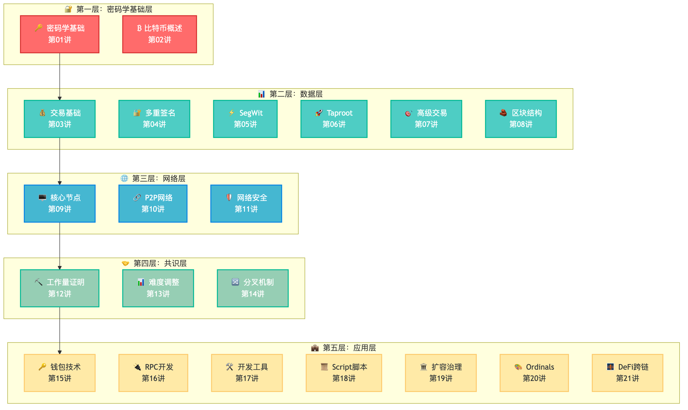

GetStartedWithBitcoin - 比特币技术入门系列
🚀 这是一个系统性的比特币技术学习路径，按照技术栈分层设计，从密码学基础到协议实现，适合所有想要深入理解比特币技术的学习者。
📖 技术架构设计
本教程按照5层架构组织：

图：比特币技术5层架构体系
从底层密码学基础到顶层应用开发的完整技术栈，每层都有独特的功能定位和学习重点
🎯 5层架构：
💼 应用层 │ 钱包、RPC开发、脚本系统、生态应用
🤝 共识层 │ 工作量证明、难度调整、分叉机制
🌐 网络层 │ P2P协议、节点通信、数据传播
📊 数据层 │ 交易、区块、UTXO、协议升级
🔐 密码学基础层 │ 哈希、签名、椭圆曲线、概述
🔐 第一层：密码学基础层
技术安全性的数学根基
第 01 讲：密码学基础 ✅ [核心基础]
- 哈希函数：数字世界的指纹
- 数字签名：证明你就是你
- 椭圆曲线：数学的神奇魔法
- HD钱包：一个助记词管理所有资产
-
- 比特币的本质和价值来源
- 去中心化的设计哲学
📊 第二层：数据层
比特币的数据结构和信息组织
-
- UTXO模型：现金vs银行账户的哲学
- 交易结构和验证机制
-
- 多签机制和安全模型
-
- 交易数据重组和容量优化
-
- 数据隐私和脚本优化
-
- 复杂数据结构和时间锁
[第 08 讲：区块结构与默克尔树 🚧
- 区块数据组织和验证
🌐 第三层：网络层
分布式网络的通信和协调
-
- 节点运行和网络参与
-
- 节点发现和连接管理
- 数据传播和同步机制
-
- 网络攻击类型和防护
- 节点安全和隐私保护
🤝 第四层：共识层
分布式共识和激励机制
-
- 挖矿算法和硬件发展
- 矿池机制和收益分配
-
- 动态难度调整机制
- 经济激励平衡
-
- 软分叉vs硬分叉
- 协议升级的社会共识
💼 第五层：应用层
实际应用和生态发展
-
- 钱包应用和用户体验
-
- 系统集成和自动化开发
-
- 实用工具开发和费用优化
-
- 基于栈的脚本语言
- 条件支付和智能合约应用
-
- Layer2解决方案和治理机制
-
- NFT技术和生态拓展
-
- 去中心化金融应用
- 跨链协议和创新
📖 学习建议
🎯 重新编号后的学习路径
🟢 基础理解路径（适合初学者，2-3周）
第01-02讲：密码学基础 + 比特币概述
第03-04讲：交易基础 + 多重签名
第15讲：钱包应用
目标：理解比特币核心概念，能够安全使用
🟡 开发实践路径（适合程序员，1-2个月）
完成基础路径 → 第09讲：节点运行 → 第16-17讲：RPC开发和工具
目标：具备比特币应用开发和系统集成能力
🔴 技术专家路径（适合研究者，3-6个月）
完成开发路径 → 第10-11讲：网络协议 → 第12-14讲：共识机制 → 第18-21讲：高级应用
目标：深度掌握技术原理，具备协议创新能力
📋 编号逻辑说明
新编号遵循5层架构的自然顺序：
- 第01-02讲：🔐 密码学基础层（技术根基）
- 第03-08讲：📊 数据层（数据结构和协议）
- 第09-11讲：🌐 网络层（分布式通信）
- 第12-14讲：🤝 共识层（共识和激励）
- 第15-21讲：💼 应用层（实际应用和生态）
优势：
- 编号完全对应技术难度递增
- 学习顺序与编号顺序一致
- 便于快速定位和查找
🔗 5层依赖关系
💼 应用层 ←── 基于所有下层技术构建实际应用
🤝 共识层 ←── 基于网络层和数据层实现分布式共识
🌐 网络层 ←── 基于数据层实现分布式通信
📊 数据层 ←── 基于密码学基础层组织和验证数据
🔐 密码学基础层 ←── 数学基础，为所有上层提供安全保障
💡 核心学习原则
按层级递进
- 🔐 密码学先行：理解安全性的数学基础
- 📊 数据为本：掌握比特币的信息组织方式
- 🌐 网络为媒：理解分布式系统的通信机制
- 🤝 共识为核：理解去中心化的决策机制
- 💼 应用为果：通过实际应用验证理论理解
学习检验方法
- 密码学层：能否生成安全的比特币地址？
- 数据层：能否解析和验证比特币交易？
- 网络层：能否运行和维护比特币节点？
- 共识层：能否理解挖矿和分叉机制？
- 应用层：能否开发实用的比特币工具和脚本？
📊 架构优势
🎯 科学分层：遵循经典计算机系统分层模式 🔄 逻辑清晰：每层职责明确，依赖关系清楚 🛠️ 实践导向：避免过度抽象，注重实用价值 📈 难度渐进：从数学基础到生态应用的自然过渡
🛠️ 学习工具与环境
基础环境搭建
# Python环境（推荐3.8+）
pip install python-bitcoinrpc requests ecdsa mnemonic base58 cryptography flask
# 比特币节点（可选，可用第三方RPC服务）
# 下载Bitcoin Core：https://bitcoin.org/en/download
📁 配套工具文件
每个技术层都提供配套的Python实践工具：
| 技术层 | 讲次范围 | 配套工具 | 主要功能 |
|---|---|---|---|
| 🔐 密码学基础层 | 第01-02讲 | crypto_examples.py |
密码学操作演示 |
| 📊 数据层 | 第03-08讲 | transaction_examples.py |
交易创建和分析 |
| 📊 数据层 | 第05讲 | segwit_examples.py |
SegWit技术分析 |
| 🌐 网络层 | 第09-11讲 | network_examples.py |
网络和节点管理 |
| 🤝 共识层 | 第12-14讲 | mining_examples.py |
挖矿和共识机制 |
| 💼 应用层 | 第15-21讲 | rpc_examples.py |
RPC应用开发 |
| 💼 应用层 | 第18讲 | script_examples.py |
Script脚本编程 |
🎯 编号优势
📈 完全对应技术难度：
- 第01-02讲：入门基础
- 第03-08讲：核心机制
- 第09-11讲：系统运行
- 第12-14讲：共识算法
- 第15-21讲：实际应用
🎯 清晰的学习检查点：
- 每完成一个层次，都有明确的技能获得
- 编号对应学习进度，便于自我评估
- 遇到困难时容易回溯到基础章节
🏆 最终学习成果
完成各层后的技能获得：
| 层次 | 章节范围 | 核心技能 |
|---|---|---|
| 🔐 基础层 | 第01-02讲 | 理解密码学原理，安全使用比特币 |
| 📊 数据层 | 第03-08讲 | 分析交易结构，理解协议升级 |
| 🌐 网络层 | 第09-11讲 | 运行节点，理解网络通信 |
| 🤝 共识层 | 第12-14讲 | 理解挖矿机制，掌握共识原理 |
| 💼 应用层 | 第15-21讲 | 开发应用工具，参与生态创新 |
🤝 如何参与贡献
我们热烈欢迎对比特币技术感兴趣的朋友参与到这个项目中来！
贡献方式
📝 内容贡献
- 章节写作：认领感兴趣的章节进行写作
- 技术审查：帮助审查已有章节的技术准确性
- 案例补充：提供实际项目案例和代码示例
- 翻译工作：将内容翻译成其他语言
💻 代码贡献
- 示例代码：编写章节配套的代码示例
- 工具开发：开发学习辅助工具
- 环境搭建：优化学习环境配置脚本
🎨 设计贡献
- 图表制作：制作技术原理图和流程图
- 界面设计：改进文档的视觉呈现
- 视频制作：录制配套的视频教程
认领章节
如果你想参与特定章节的写作，请：
- 在 Issues 中创建一个新议题
- 标题格式：
[认领章节] 第XX讲：章节名称 - 说明你的专业背景和写作计划
- 我们会尽快回复并分配任务
质量标准
为了保证内容质量，我们的标准是：
- ✅ 技术准确：所有技术内容都经过验证
- ✅ 通俗易懂：复杂概念用简单语言解释
- ✅ 实用性强：每章都包含实际操作演示
- ✅ 代码可运行：所有代码示例都经过测试
- ✅ 持续更新：随着技术发展及时更新内容
📞 联系我们
- 项目发起人：@bhbtc1337
- GitHub Issues：提交问题或建议
- 微信交流群：填表加入
📄 许可证
本项目采用 MIT 许可证，欢迎自由使用和分发。
让我们一起构建最好的中文比特币技术教程！
Every expert was once a beginner. Every pro was once an amateur.
Every expert was once a beginner. Every pro was once an amateur.